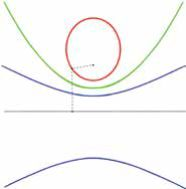

数海拾贝11
希帕蒂娅的重要工作之一是对阿 波罗尼奥斯的名著《圆锥曲线论》的 研究和评论。这本书共有八卷，但第 八卷已经失传了。阿波罗尼奥斯发展 了蒙纳埃奇姆对圆锥曲线的研究，使 它成为体系完整的理论。他把各种圆 锥曲线作为一个整体来研究，第一次 提出偏心率的概念（见下图）。所谓 偏心率是指圆锥曲线上的一点（M） 到它所在的平面内一个定点的距离与 到不过此点的一条直线（水平的黑 线）的距离之比（比值为∈）。这个 定点被称为焦点（F），而这条直线 被称为准线。图中红色曲线是椭圆 （0 < ∈ <1 图中的例子 ∈ =1/2 ），绿色是抛物线（ ∈ =1），蓝色是双曲线 （1< ∈ <∞；图中的例子 ∈ =2）。

阿 波 罗 尼 奥 斯 把 0 < ∈ < 1 的 曲线叫作 ellipse，意思是“缺少”； ∈ = 1 的 曲 线 叫 作 p a r a b o l a ，意 思 是“相当”；1< ∈ < ∞；的曲线叫作 hyperbola，意思是“超出”。阿波罗尼奥斯已经意识到这些圆锥曲线可以 用来描述天体的运行轨道。他是代数 几何最早的开创者。他的理论要等到 一千八百年后才被开普勒、牛顿等人 继续发展下去。